Getting Started
Welcome
Maybe you think UE4Editor seems too old fashion.
Maybe you think It should be more beautiful.
This plugin Give you a chance to Customize your editor.
Why don't you try it?
Features:
- Customize the Style of UE4Editor.
- Include more than 50 items to Customize.
- Can also Customize Editor Fonts
- Use "UTheme" File to cross Engine Version
- Will not Modify any Editor File.
- All Changes will restore when you disable the plugin.
Getting Started
- 1.Download the zip file from Github Release page or Get this plugin from Unreal Marketplace.
- 2.Unzip files to Engine/Plugins or Project/Plugins(skip this step if you download it from Marketplace).
- 3.Enable UE4EditorCustomize plugin and restart editor.
- 4.Open ProjectSetting->UE4 EditorCustomize->Import Built-in Theme(Top of the setting panel).
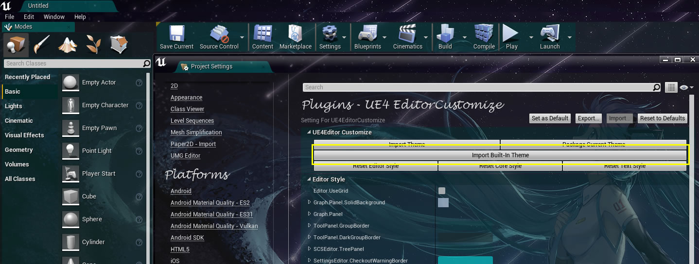 - 5.You will meet a new editor.
Editor Style
This documentation explain what is controlled by the items in "Editor Style". Here are the contents:
- Editor.UseGrid
- Graph.Panel.SolidBackground
- Graph.Panel
- ToolPanel.GroupBorder
- ToolPanel.DarkGroupBorder
- SCSEditor.TreePanel
- SettingsEditor.CheckoutWarningBorder
- TableView.DarkRow
- DetailsView
- PlacementBrowser.Tab
- EditorModesToolbar.ToggleButton
- Toolbar.Background
- UMGEditor.Palette
Here are the details:
Editor.UseGrid
Editor.UseGrid control if there have a Grid in Graph Editor.
What is the Graph Editor? Graph editor is a common editor in UE4Editor, like Blueprint editor,Material editor.
Here is the Graph editor with out grid:

Graph.Panel.SolidBackground
Control the background of Graph Editor
Graph.Panel
Control the color of UMG Designer graph's grid.
Example:
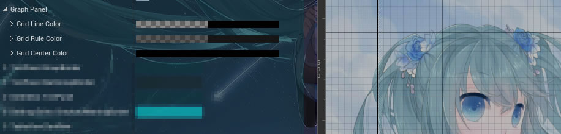
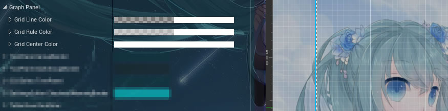
Color of The thin lines
Color of The bolder lines
Color of The lines that cross the center
ToolPanel.GroupBorder
Control the backgound of Tool Panel
What is the Tool Panel? Here are some Widget contain Tool Panel
- Mode
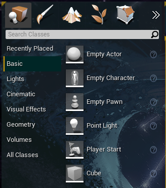- World Outliner
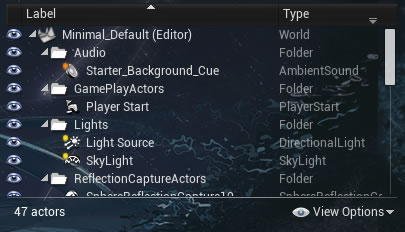- Message Dialog
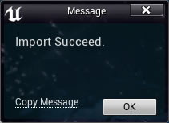
ToolPanel.DarkGroupBorder
Control the "DarkGroupBorder" of Tool Panel
Which Widget use "ToolPanel.DarkGroupBorder"? Here is the Widget contain Tool Panel
- Placement Mode
SCSEditor.TreePanel
Control the backgoround of Following Widget:
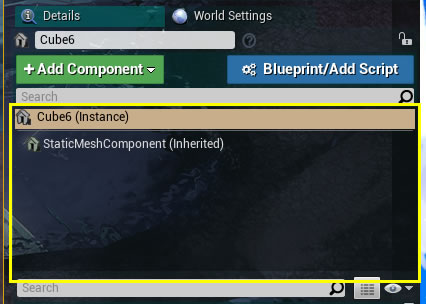
SettingEditor.CheckoutWarningBorder
Control warning message on setting panel
Example:
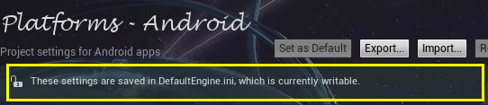
TableView.DarkRow
Control the appearance of Table View item
Example:
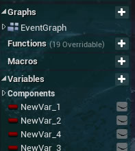
DetailsView
Control the appearanceof Details View
What is the Details View? Details View is a kind of widget that show the details property.
There are many Details View in UE4 Like:
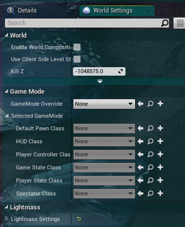
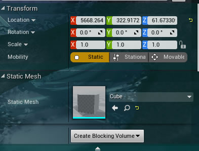
PlacementBrowser.Tab
Control the apperance of buttons in Placement Browser:
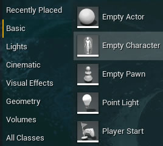
EditorModesToolbar.ToggleButton
Control the background of Editor Modes Button:
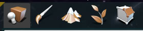
Toolbar.Background
Control background of the following Widget:
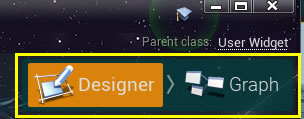
UMGEditor.Palette
Control background of UMG Widget List:
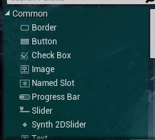
The header of UMG Widget List
The item of UMG Widget List
Core Style
This documentation explain what is controlled by the items in "Editor Style". Here are the contents:
Here are the details:
WindowStyle
Control the appearance of all slate window.
If you want to change the backbround of all window, Or replace the Max,Min,Close button with three cute icon,This collection is what you are looking for.
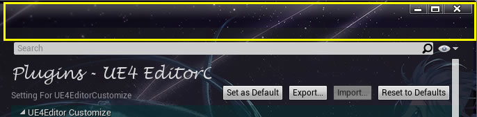
Docking.MajorTab
Control the appearance of major tab. The major tab is the follow widget:
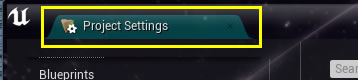
Docking.Tab
Control the appearance of tab. The Normal tab is the follow widget:
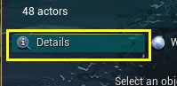
TableView.Header
Control background of the Header of TableView.
Example:
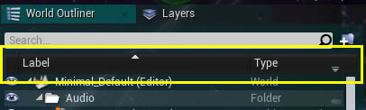
ToolBar.Backgournd
Control the background of the Toolbar:
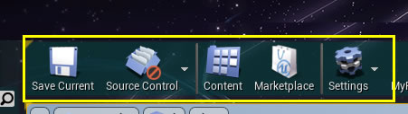
Menu.Backgournd
Control background of all menu.
Example:
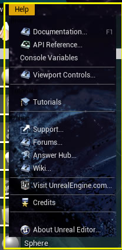
Text Style
This documentation explain what is controlled by the items in "Text Style". Here are the contents:
Here are the details:
NormalText
Control the appearance of Normal Text
Normal Text is a kind of common Text Style. Most Button Text and some Text in Table View are using Normal Text.
Example(Big Normal Text):
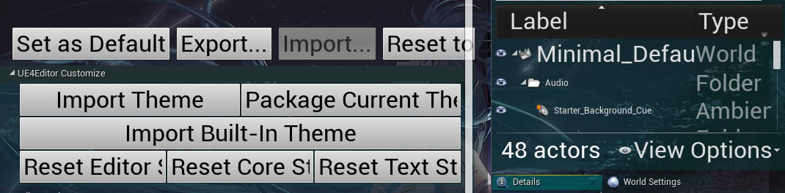
ToolBar.Label
Control the appearance of ToolBar's label.
Example(Big Label of toolbar):
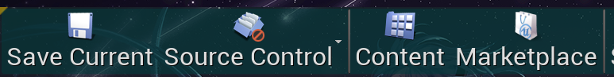
Docking.TableFont
Control the Text Style of Docking Tab's Label.
Example(Big Label):
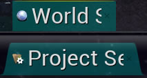
Menu.Label
Control the appearance of menu item's label.
Example(Big Menu Label):
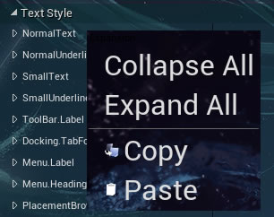
Menu.Heading
Control the appearance of menu Header's label.
Example(Big Menu Header):
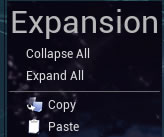
PlacementBrowser.Tab.Text
Control the appearance of Tab's label in Placement Mode.
Example(Big Tab Label):
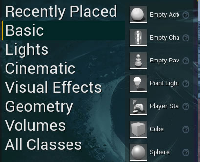
PropertyWindow
Control the appearance of PropertyWindow's label. Most Property's Label are under control.
Example(Big Property Label):
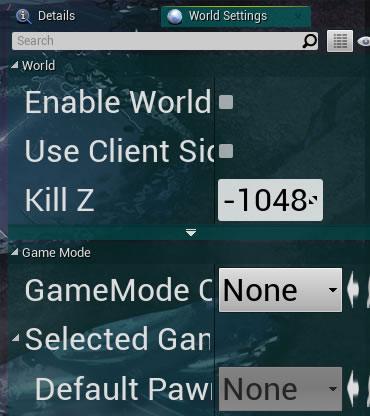
DetailsView.CategoryFontStylet
Control the appearance of Category's label in Details View.
Example(Big Category Label):
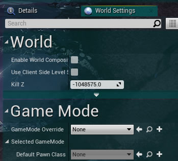
Hyperlink
Control the appearance of Hyperlink.
Hyperlink is like the following widget:
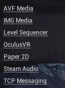
InlineEditableTextBoxStyle
Control the appearance of InlineEditableTextBox.
InlineEditableTextBox is like the following widget:
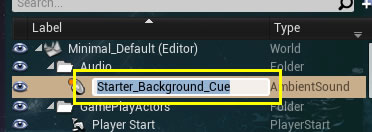
SettingEditor.CategoryAndSectionFont
Control the appearance of Section or Category Label in Setting Editor.
The label is like the widget:
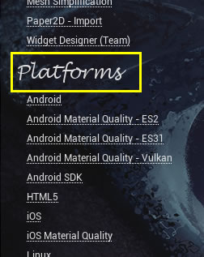
ContentBrowser
Hold the setting of font in Content browser.
Control the label of Root Directory:
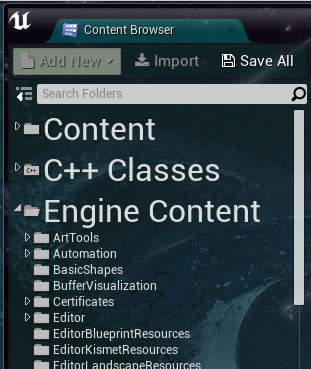
Control the label of Normal Directory:
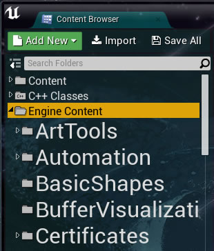
Control the label of File in Tile View:
Three Settings control three appearance on three different scale.
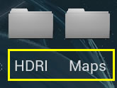
Control the Label of the Button on Top Bar:
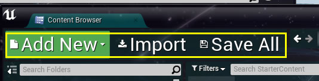
Control the Path Text in Content browser:
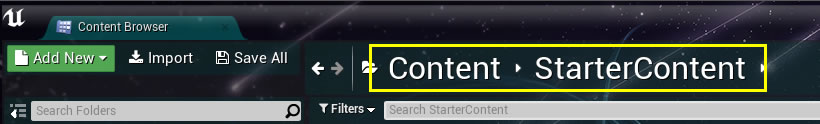
Import And Package
UE4EditorCustomize can import theme that made by other people easily. Using UTheme File you can even import the theme that packaged with different Engine.
If you want to import a theme, just click the "Import Theme" button in setting panel:
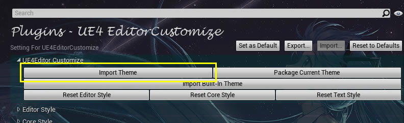
If you have made a fantastic theme and want to share it to your Colleague, just click the "Package Current Theme" button, and you will see the following dialog:
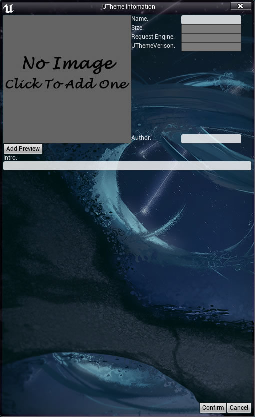
Then, fill your infomation in dialog or just click "confirm" if you don't want to add anything. Next,choose a place to save your UTheme file and then you can send your UTheme file to the people that you want to shared.
Q&A
Why my window become so big?
Try Check Your Setting At
"Core Style->WindowStyle->Child Background Brush->ImageSize"
If this setting's value is very big(bigger than 200*200) ,you will need to reduce it to some small value like 32*32. Then your window size will return normal.
I made a big mistake and now I can't change the setting any more. What should I do?
If you made a big mistake that cause the layout broken and can not do anything on this situation,there still have a way to restore your editor.
Open
"Project/Saved/Saved/Config/Windows" folder,you will find a file named "Editor.ini". Delete it ,then your Editor will return normal. If you care about the other setting in this file ,you can also open it and delete the "[/Script/UE4EditorCustomize.EditorCustomizeSetting]" section and all content of it . your proejct will return normal like the fore action.
I package a UTheme,but when other people import it says "Request a Higher Engine Version".
For now,the UTheme can cross Engine version but it can only contain Font and Texture. If you use other asset (Like Material), UTheme will request at least the same Engine version that you packge it. So If you want your UTheme can run on every Editor,please only use Texture and Font to build your theme. If you still want to use the asset like material,you should package your theme with an old Engine.
Can I connect will you?
Of cource Yes, Just send an e-Mail to wwwbkkk@126.com. I will glad to hear your message.